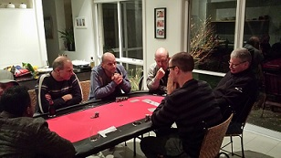

.....Altitude poker location, card trickery and hygiene techniques....
| Date | Location | Game | Players |
|---|---|---|---|
| {{tournaments.tournamentOne[0].eventDate}} | {{tournaments.tournamentOne[0].location}} | {{tournaments.tournamentOne[0].tournament}} | {{tournaments.tournamentOne[0].noOfPlayers}} |
| Position | Name | Points | Won |
|---|---|---|---|
| {{result.position}}{{positionSuffix(result.position)}} | {{result.name}} | {{result.points}} | {{result.cash | currency}} |
| Bounty Winner |
|---|
| {{tournaments.tournamentOne[0].bountyWinner}} |
| Position | Name | Played | Won | Win Ratio | Ave Points | Ave Position | Points |
|---|---|---|---|---|---|---|---|
| {{$index + 1}}{{positionSuffix($index + 1)}} | {{result.name}} | {{result.played}} | {{result.won}} | {{result.won / result.played * 100| number:2}} % | {{result.points / result.played | number:2}} | {{result.averagePosition | number:2}} | {{result.points}} |
Firstly there was true admiration from the host as - one by one - the participants of the poker night made their way from the protected confines of ‘The Park’ (aka Wobblersville or Hollywood) through dangerous streets to the outer rim. Well done for that brave act - trophies to all.
(Author’s note - I can’t pen a story in the 3rd person - so I am going to return to first person … )
Prior to the start time of 6.30 … I sent the bride off and had the house to myself from about 4.30 bells …this was good … as I was able to finalise gourmet delights and make the gravy (KFC style) … but upon returning with said gravy … I started on the whiskey and dry … I was well-lubed by the time the poker started … :-)
When the weary travellers arrived, clearly thirsty and hungry - slow-cooked lamb and pork was unveiled and did the boys show a good fang! Led by Jade - it was like ravenous wolves were unleashed - with clearly only Mark V appreciative of the cooking technique (asking polite and appropriate questions) the others just grunted as they inhaled copious amounts of dead animal.
7.35 bells and the game starts ….(with Brian only a little bit agitated that we are already 5 minutes over time) …but alas, it was a quiet start - so to liven things up, I did the famous mis-deal trick ….it’s an old poker trick where you fcuk up the deal numerous times just to get people smiling. It was a small sacrifice - although, some players actually took me seriously …but I would enact sweet revenge later in the evening … funnier still - Steve caught the bug and fcuked up the next deal too. Unfortunately for Steve - the joke was over and alas - people just thought he was amazingly silly - indeed, big Andy just shook his head
Actually - on Andy - he has the quiet, disapproving head shake down pat! Quite ominous - shit card player though.
The game meandered …
8.23 bells … stray geese arrived at the table in the form of Steve and Jade …Mark V - sat calm and collected minding about 16 cents worth of chips when he had a reasonable hand and decided to go all in … I still don’t know who won be because the table was in uproar - ‘How can there is 6 fours in one deck’ “It’s nooort fcuken raaart’ says Jade (not for the first or last time) …and the Steve chimes in “Yeah - how does that work - is there a special poker deck where there is 6 on the one card’
Fcuk me ….. yep, Brian shook his head vigourously … Andy shook his ominously …and Paul and I just looked at each other and said ‘fcuk me’ or words to that effect …perhaps it was ‘fcuk us’ but that just sounds odd
Ben said not much … the game meandered ….
Too liven things up .. Brian started to do some park-style Hollywood stuff with the deal … dealing and flipping cards like a female with big tits - which would be great if you were a female with big tits … Then he started to add Star Wars sound effects as he flicked cards about …which would be great if you were Princess Leia ….with big tits
The game meandered ….
21.10 … something amazing happened because I wrote … “Wow Wee!’ cue Brian Taylor but in all truth …I have got to idea what happened! (Your author was getting pretty pissed by this stage … anyway well done for whoever did something special - I think it was Ben who has the first of 28 Ace pairs for the night ...
21.24 - something else good happened - I think Mark V won a hand with 2 queens but that could be related to the note above
21.43 - something really, really good happened because Paul quoted “Oh, that’s the win of the night” “Brilliant , courageous" … sounded like a commentator on “Pot Black” - ( I whispered to Paul that "courage and stupidity were known bed pals" … so, I am not sure what happened but I think it was Mark V or Jade won with Aces Queen High …)
but the game was now on ….no meandering … more a spritely trot….
21.46 Bang! Ben gets loud …the table hushes … he smashed everyone off the table holding 2 aces …. and collects Bang! but he did it serenely, not even a wobble - the cards were loud and he let them make his noise …. that’s style
…and a shit load of luck
…and the night starts to get dark….
Jade started to talk about his cock! Out of the blue - just like that … “Lads, I want to talk cock! … and how because he knows a thing or two ‘about fcuken hygiene’ … you wash your hands before you put the horse back in the stable …. well of course …not. Indeed, Jade was the only person at the table - indeed - in this country - that has perfected the art of somehow flipping his cock back into his pants without touching his jeans …. I imagine its some kind of hip flip - which will cause injury when he get older but … for now … it means he can wash his hands without touching his old fella … me, I know where my cocks been - happy to handle it …. indeed, generally gave it an itch or two when I was preparing your food.
anyway - something else went bad for Jade because he then ripped three quotes on the trot …
“Bollocks - I think its just unbelievable”
“It’s Mad”
“It’s just mort fcukaarn raarrt”
and by the way…. Jade was leading at this time … this was when things were good in his life … he started chewing lemons a bit later when the cards turned sour
|  |
| Palpable tension and concentration during the finale heads-up |
22.25 bells…Andy spat the dummy — no more quiet head shakes …he’d had enough “All In” he says with a wry smile …actually he sooked up a treat ..”I’ve only won one hand all night” then goes all in on total poxness (‘total poxness’ - is a technical term for not great cards) suffice to say Andy first out ….8th
The game had now cracked a jog ….
22.32 - Mark V - cactus …goodnight 7th …this was all rather odd because I won this hand with something that was un-loseable …not because of the great cards but because I told everyone what was happening !! …and Mark V - still went all in … brave ? Still I was corrected by Brian - my win wasn’t guaranteed - Mark could have 'played slow’ …yeah right - there are only 2 people that know poker at this table - Ben and Brian - if Mark is playing slow… it’s because he’s trying to figure out what is happening ….indeed, on this hand - the 2 Mark’s were trying to figure out what was happening …. anyway - suffice to say - I figured it out first … Goodnight Mark V! (Note - Ben, Playing Slow has a big part to play in this nights story … I am not a fast learner …. )
22.37 - Ben - 2 aces in hand again !! for the 29th time that night …this time it was loud …a ‘how does get fcuked’ style flip of his cards and bang - he cleans up again ….Paul and I discuss the worlds great magicians and can’t think of any … Houdini …but Paul rightly corrects the record …’Escape Artist’ … someone says ‘Copperfield’ but he’s not good enough for Ben …nup - it’s just ‘ 2 Ace Ben - The Magician'22.47 - Brian has his highlight of the night - great win Queens/Aces - takes biggest pot of the night … and he sat back quietly proud; yours truly would dim the glow of his win in a few minutes …
23.00 - I go sick … sucking the air out of the room with some stella play, guts, determination …..oh, and a tad of luck —— as I ripped out the night’s (infact, probably 2014’s greatest win) as a Jack flipped into the river and I walked away with at Straight … cue the fcuking big band ..horns everywhere
23.22 - I suck the air from the room …again …with play that can only be described as breath-taking - (Hey - if you guys want to blow wind up your won arse - write the minutes next time) …anyway - I knocked Brian into oblivion … Kings - 4 high ….to 2 high …Good Night Brian 6th … and I got some prize … not sure why but $14 came my way for beating Brian …still not sure why
23.40 - 2 Aces Ben again!!
23.46 - Good night Paul 5th - cannot remember how but he was eloquent and polite in his speech …
Sometime soon after - Good Night Jade 4th - Jade was not eloquent nor nice in his speech “Bollocks - this is not a game of skill just luck - Bullocks”
12.07 - Steve’s Cactus 3rd place - can’t remember how - but he was Polite and eloquent in his speech … actually he said nothing and just folded his arms ..trying to be quietly intimidating like Andy… but looking more like he just wanted to throw the dummy out of the cot.
| 1st place and super bonus winner Ben - Show him da money! |
…..the finale … 2 Aces Ben the Magician up against yours truly with me starting with so many chips that I had to stand to see my opponent … Ben was brilliant - he eroded my piles (that’s actually a medical term … and a little off-putting when you think about it … ) anyway with brave play Ben eroded my pile and soon it was even … the game ebbed and flowed …. tension filled the air … we’ll at least for Ben and I - the others just wanted out, home, bed, cot … But then a stroke of brilliance …. Ben Played slow on Kings and sucked me into an All -In on a pair of 2’s … Ben - too good …I never felt in control … at the end … a stroke of genius - the stroke of ’The Magician’
Good Night Leopold … 2nd
Well done Ben - The Winner
Another great night boys - thanks to all…. and not much of the above reflected what went on :-)
until next time….